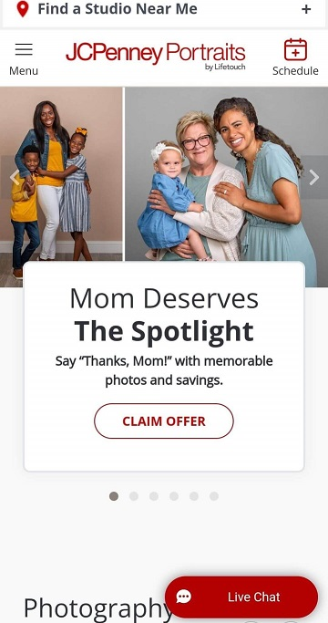
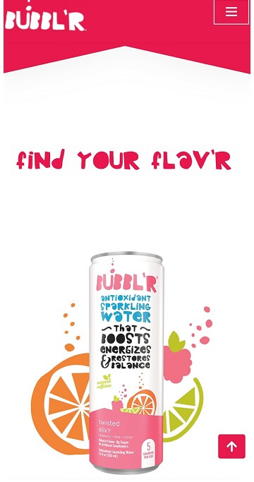
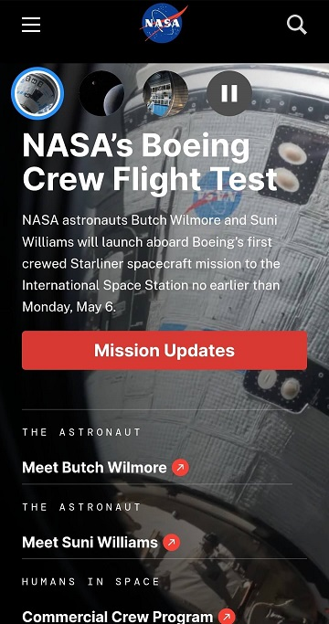

Repetition
JCPenney Portraits
jcpportraits.com The JCPenney Portraits website is a good example of repetition because it keeps its brand colors of red and white on the page. The red stands out well on the white layout, and it also highlights the important parts of the webpage. Everything that is red on the page is either important information, such as sales and offers, or a link that the users can click on to navigated where they want to go. Using red consistently in this way helps users know what to expect when navigating this site, while also sticking to the main color of their brand to give the page a familiar feel for those who enjoy shopping at JCPenney.
White Space and Clean Design
BUBBL'R
drinkbubbl'r.com The design for the BUBBL’R website, specifically the section that advertises energy drinks, has a very simple design, which is a great choice because most of the art and styling of the page comes from the colorful cans displayed throughout the page. The result of having a minimal design that utilizes white space to separate the many different colors and flavors of their cans puts the drinks at the center of what they’re advertising. It is also good practice to list things out using the rule of thirds, which this page utilizes to evenly separate the cans on a grid for easy viewing. Even the fun styling of the text matches the colorful aesthetic of the website, which is unique and can grab the attention of most users visiting the site.
Visual Hierarchy
NASA
nasa.gov Following the visual hierarchy is very important when trying to capture user attention. The NASA website follows this principle very well. The top of the front page starts with all the most important news that NASA is excited to showcase first, such as recent missions and current studies being conducted to further our understanding of earth and space. Below is the list of people who are working on each project. This is so users can get a better understanding of who’s involved. Next are featured news articles that may also intrigue users that visit the website. Then scrolling down to the bottom of the page shows other topics and information of interest for those who are looking for anything specific. Having a news layout like this for a company that is constantly working on new projects is a great way to keep users focused on the most recent events while also providing information about previous topics and past discoveries of their interests.